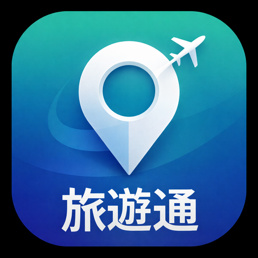

11 國 265 區域旅遊探索 · 地圖打卡 · 行程規劃
用 Chrome 打開 onerkk.github.io/taiwan-travel
→ 網址列右邊出現 「安裝應用程式」圖示，或點選選單 ⋮ →「安裝應用程式」
→ 桌面就會出現「旅遊通」App 圖示
用 Safari 打開網站（不能用 Chrome）
→ 點底部「分享」按鈕 ⬆
→ 往下找「加入主畫面」
→ 點「新增」→ 桌面出現 App
到 console.cloud.google.com，建立新專案或選擇現有專案。
到「API 和服務」→「程式庫」，搜尋並啟用：
Places API (New) Maps JavaScript API Geocoding API
到「憑證」→「建立憑證」→「API 金鑰」
複製以 AIzaSy... 開頭的金鑰
打開 App → 貼上 API Key → 點「開始旅行」
https://onerkk.github.io/*景點 · 美食 · 住宿
即時評分 · 電話 · 導航
Google 地形圖
縮放 · 拖移 · 頭像
1km 內打卡
照片 · 備註 · 同伴偵測
選天數 · 自動排程
導航 · 一鍵撥打電話
即時溫度 · 體感
濕度 · 風速
同 Key 即旅伴
即時定位 · 打卡同行
選擇國家 → 選擇區域 → 切換「景點 / 美食 / 住宿」分類
每張卡片顯示：照片、評分、類型、營業狀態、價位、距離、評論
按「導航」直接開 Google Maps 導航
按「📞 電話」一鍵撥打
按「街景」查看 Google 街景
按「+ 加入」加入行程規劃
開啟定位後，1 公里內的景點卡片上會出現「打卡」按鈕
打卡會記錄：景點名稱、照片、地址、時間
如果有使用同一組 Key 的旅伴也在附近打過卡，會自動標記「同伴同行」🎉
點頂部「地圖」分頁 → 顯示 Google 互動地形圖
每個區域一個圓點，打卡越多越大越亮
你的頭像（黃圈）和旅伴頭像（綠圈）顯示在地圖上
手指可以縮放、拖移，點圓點跳到該區探索
切換「打卡記錄」查看完整歷史
在探索頁按「+ 加入」把喜歡的地點加入
到「行程」分頁 → 設定天數（1-7 天）→ 選擇交通方式
按「⚡ 自動排行程」→ 自動分配每天行程
每個景點都有時段、導航按鈕、電話
在首頁按「📍 自動定位」→ 自動判斷你在哪個國家、哪個區域
地圖上會顯示你的即時位置
排序切換「📍 最近」可按距離排序景點
準備好了嗎？
🚀 開始旅行